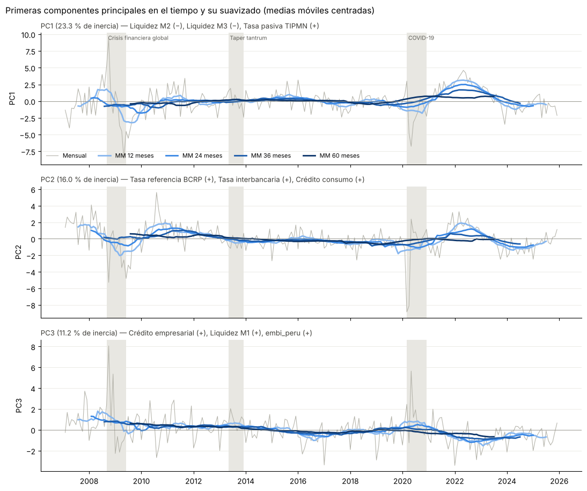
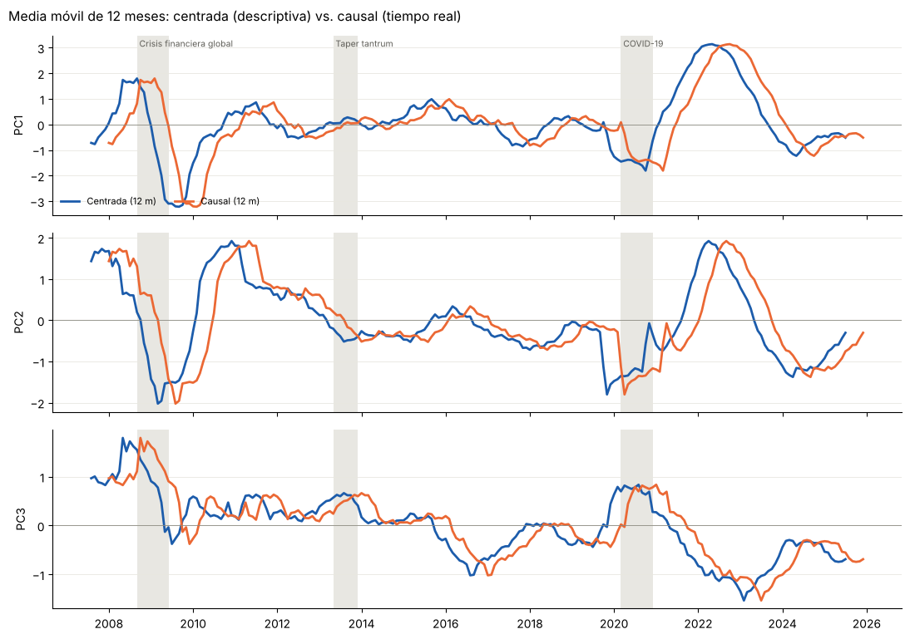

05b · Componentes principales en el tiempo y suavizado por ventanas
Tesis: Medición del ciclo financiero en Perú mediante técnicas de reducción dimensional y machine learning Autor: Roberto Samaniego Salcedo · Asesor: Dr. Sergio Camiz
Objetivo: graficar los scores de las tres primeras componentes principales del dataset mensual en el tiempo y suavizarlos con medias móviles de 12, 24, 36 y 60 meses (desde un año), para separar la señal persistente del ruido mensual.
Diseño:
PCA estático sobre toda la muestra mensual (227 meses × 17 variables, transformado y estandarizado), igual que en 05/08.
Regla de signos determinística de Rcamiz: en cada componente se comparan la suma de cargas positivas al cuadrado y la de cargas negativas al cuadrado; si dominan las negativas, se invierte el signo. Así la orientación de cada eje no depende del software.
Suavizado de los scores con media móvil centrada (sin desfase: el pico suavizado cae en la fecha del pico real). La versión causal (solo pasado, útil en tiempo real) se compara en la sección 5: introduce un retraso de unos (w − 1)/2 meses.
Diferencia con EPCA: aquí la estructura (las cargas) es fija y lo que se suaviza son los valores en el tiempo. En EPCA se recalculan las cargas en cada ventana. Una ventana de EPCA de 12 meses no es viable con 17 variables: n = 12 < p = 17 hace singular la matriz de correlaciones (ver 06b).
import os, syssys.path.insert(0, 'notebooks') if os.path.basename(os.getcwd()) !='notebooks'else sys.path.insert(0, '.')from modelos_dl import ir_a_raiz_del_repo, EPISODIOS_REFERENCIAir_a_raiz_del_repo()import numpy as npimport pandas as pdimport matplotlib.pyplot as pltfrom sklearn.decomposition import PCAfrom sklearn.preprocessing import StandardScalerdf = pd.read_csv('data/processed/dataset_transformado_mensual.csv', index_col=0, parse_dates=True)nombres = [c.replace('_log_diff', '').replace('_diff', '') for c in df.columns]X = StandardScaler().fit_transform(df.values)N_COMP =3# Horn sugiere 4: cambiar aquí para incluir PC4VENTANAS = [12, 24, 36, 60] # meses de suavizado (desde un año)pca = PCA(n_components=N_COMP).fit(X)cargas = pca.components_.T.copy() # p x N_COMPscores = pca.transform(X) # n x N_COMPprint(f'{len(df)} meses x {X.shape[1]} variables | {df.index.min():%Y-%m} a {df.index.max():%Y-%m}')print('Inercia por componente (%):', np.round(100* pca.explained_variance_ratio_, 2),'| acumulada:', round(100* pca.explained_variance_ratio_.sum(), 2))
227 meses x 17 variables | 2007-02 a 2025-12
Inercia por componente (%): [23.27 15.95 11.15] | acumulada: 50.37
2. Regla de signos de Rcamiz
Para cada componente k: si Σ (cargas negativas)² > Σ (cargas positivas)², se multiplican por −1 las cargas y los scores. La regla es determinística: dos programas distintos (Rcamiz, scikit-learn) producen la misma orientación.
for k inrange(N_COMP): pos = np.sum(cargas[cargas[:, k] >0, k] **2) neg = np.sum(cargas[cargas[:, k] <0, k] **2)if neg > pos: cargas[:, k] *=-1 scores[:, k] *=-1print(f'PC{k+1}: signo invertido (negativas {neg:.3f} > positivas {pos:.3f})')else:print(f'PC{k+1}: signo conservado (positivas {pos:.3f} >= negativas {neg:.3f})')# Correlaciones variable-componente (círculo de correlaciones) para interpretar cada ejecorr = pd.DataFrame(np.corrcoef(X.T, scores.T)[:X.shape[1], X.shape[1]:], index=nombres, columns=[f'PC{k+1}'for k inrange(N_COMP)])for k inrange(N_COMP): c = corr[f'PC{k+1}'].sort_values(key=np.abs, ascending=False).head(5)print(f'\nPC{k+1} — variables más asociadas:')print(c.round(2).to_string())
Media móvil centrada de w meses. Los extremos de la muestra pierden (w − 1)/2 meses por lado: es la honestidad del método, no se extrapola.
scores_df = pd.DataFrame(scores, index=df.index, columns=[f'PC{k+1}'for k inrange(N_COMP)])suavizados = {w: scores_df.rolling(w, center=True).mean() for w in VENTANAS}causales = {w: scores_df.rolling(w).mean() for w in VENTANAS}salida = scores_df.copy()for w in VENTANAS:for c in scores_df.columns: salida[f'{c}_mm{w}_centrada'] = suavizados[w][c] salida[f'{c}_mm{w}_causal'] = causales[w][c]os.makedirs('data/results', exist_ok=True)salida.to_csv('data/results/05b_scores_suavizados.csv')corr.to_csv('data/results/05b_correlaciones_variables.csv')print('Guardado: data/results/05b_scores_suavizados.csv')
Guardado: data/results/05b_scores_suavizados.csv
4. Componentes en el tiempo
Un panel por componente. Gris claro: score mensual sin suavizar. Azul: medias móviles centradas, más oscuras cuanto más larga la ventana. Franjas grises: episodios de referencia (solo para lectura ex post).
# Rampa ordinal de un solo tono (ventana más larga = más oscura)AZULES = ['#86b6ef', '#3987e5', '#1c5cab', '#0d366b']GRIS ='#b5b4ab'def sombrear(ax, etiquetas=False):for nombre, (ini, fin) in EPISODIOS_REFERENCIA.items(): ax.axvspan(pd.Timestamp(ini), pd.Timestamp(fin), color='#d9d8d0', alpha=0.6, lw=0, zorder=0)if etiquetas: ax.annotate(nombre, (pd.Timestamp(ini), 1.0), xycoords=('data', 'axes fraction'), xytext=(2, -2), textcoords='offset points', fontsize=7.5, color='#5f5e58', va='top')def interpretar(k): c = corr[f'PC{k+1}'].sort_values(key=np.abs, ascending=False).head(3)return', '.join(f'{v} ({"+"if r >0else"−"})'for v, r in c.items())fig, axes = plt.subplots(N_COMP, 1, figsize=(11, 3.1* N_COMP), sharex=True)for k, ax inenumerate(np.atleast_1d(axes)): col =f'PC{k+1}' sombrear(ax, etiquetas=(k ==0)) ax.plot(scores_df.index, scores_df[col], color=GRIS, lw=0.8, label='Mensual')for w, color inzip(VENTANAS, AZULES): ax.plot(suavizados[w].index, suavizados[w][col], color=color, lw=2, label=f'MM {w} meses') ax.axhline(0, color='#8a8980', lw=0.6) ax.set_ylabel(col) ax.set_title(f'{col} ({100* pca.explained_variance_ratio_[k]:.1f} % de inercia) — {interpretar(k)}', loc='left', fontsize=9.5, color='#3d3c37')for s in ['top', 'right']: ax.spines[s].set_visible(False) ax.grid(axis='y', color='#e8e7e0', lw=0.6)np.atleast_1d(axes)[0].legend(ncol=5, fontsize=8, loc='lower left', frameon=False)fig.suptitle('Primeras componentes principales en el tiempo y su suavizado (medias móviles centradas)', x=0.01, ha='left', fontsize=11.5)plt.tight_layout()os.makedirs('reports/figures', exist_ok=True)plt.savefig('reports/figures/05b_componentes_suavizadas.png', dpi=130, bbox_inches='tight')plt.show()

5. Centrada vs. causal: el costo del tiempo real
Con la media móvil causal (solo meses pasados) el indicador puede calcularse en tiempo real, pero sus giros llegan tarde. El gráfico compara ambas para la ventana de 12 meses.
W =12fig, axes = plt.subplots(N_COMP, 1, figsize=(11, 2.6* N_COMP), sharex=True)for k, ax inenumerate(np.atleast_1d(axes)): col =f'PC{k+1}' sombrear(ax, etiquetas=(k ==0)) ax.plot(suavizados[W].index, suavizados[W][col], color='#1c5cab', lw=2, label=f'Centrada ({W} m)') ax.plot(causales[W].index, causales[W][col], color='#eb6834', lw=2, label=f'Causal ({W} m)') ax.axhline(0, color='#8a8980', lw=0.6) ax.set_ylabel(col)for s in ['top', 'right']: ax.spines[s].set_visible(False) ax.grid(axis='y', color='#e8e7e0', lw=0.6)np.atleast_1d(axes)[0].legend(fontsize=8, loc='lower left', frameon=False, ncol=2)fig.suptitle(f'Media móvil de {W} meses: centrada (descriptiva) vs. causal (tiempo real)', x=0.01, ha='left', fontsize=11.5)plt.tight_layout()plt.savefig('reports/figures/05b_centrada_vs_causal.png', dpi=130, bbox_inches='tight')plt.show()# Retraso de la versión causal: desplazamiento que maximiza la correlación con la centradafor k inrange(N_COMP): col =f'PC{k+1}' a, b = suavizados[W][col], causales[W][col] mejores = {r: a.corr(b.shift(-r)) for r inrange(0, 13)} r =max(mejores, key=mejores.get)print(f'{col}: la versión causal llega con ~{r} meses de retraso (corr. {mejores[r]:.3f})')

PC1: la versión causal llega con ~5 meses de retraso (corr. 1.000)
PC2: la versión causal llega con ~5 meses de retraso (corr. 1.000)
PC3: la versión causal llega con ~5 meses de retraso (corr. 1.000)
6. Persistencia según la ventana
¿Qué tan estable es cada componente suavizada? Se mide por el número de cambios de signo (cruces de cero): menos cruces = señal más persistente, más cercana a la noción de fase.
filas = []for w in [1] + VENTANAS: serie = scores_df if w ==1else suavizados[w] fila = {'ventana_meses': w}for c in scores_df.columns: s = np.sign(serie[c].dropna()) fila[f'cruces_{c}'] =int((s.diff().abs() >0).sum()) filas.append(fila)persistencia = pd.DataFrame(filas).set_index('ventana_meses')persistencia.to_csv('data/results/05b_persistencia.csv')persistencia
cruces_PC1
cruces_PC2
cruces_PC3
ventana_meses
1
72
86
87
12
18
7
13
24
9
5
5
36
8
5
3
60
3
3
5
7. Lectura (dataset mensual, 227 meses)
Orientación de los ejes (regla de Rcamiz). PC1 se invirtió por un margen mínimo (cargas negativas 0,505 frente a positivas 0,495). La regla es determinística, pero en un empate tan cercano un pequeño cambio en los datos puede voltear el eje: hay que reportar el signo junto con este margen.
PC1 (23,3 %) — condiciones monetario-financieras. Valores positivos = tasas pasivas e interbancaria altas con menor crecimiento de liquidez (M2, M3) y de la bolsa. El suavizado muestra un único episodio persistente fuerte: 2021–2023, coherente con el ciclo de alza de la tasa de referencia posterior a la pandemia [verificar fechas con el BCRP].
PC2 (16,0 %) — tasas de política y actividad. Caídas pronunciadas en 2008–2009 y 2020 (recortes de tasa y caída de la actividad) y un máximo en 2022.
PC3 (11,2 %) — crédito empresarial y riesgo. Tendencia descendente de largo plazo (de ≈ +1 en 2008 a ≈ −1 en 2023), con un repunte en 2020 que podría reflejar los programas de crédito empresarial con garantía estatal de ese año [hipótesis por verificar].
Qué ventana usar. Los cruces de cero bajan de 72–87 (mensual) a 7–18 con 12 meses y a 5–9 con 24 meses. Con 60 meses las series quedan casi planas: se pierde la señal de los episodios. Las ventanas de 12 a 24 meses equilibran ruido y señal; la de 12 es la que se usa como referencia para la datación de regímenes en 09.
Centrada vs. causal. La media causal de 12 meses llega con unos 5 meses de retraso (≈ (w − 1)/2). Para describir episodios se usa la centrada; para un indicador en tiempo real, la causal, asumiendo ese retraso.
Limitación. La muestra cubre 19 años; un ciclo financiero de 8 a 30 años (Drehmann, Borio & Tsatsaronis, 2012) no se observa completo. La extensión hacia 1985 (01b, 04c) es necesaria para leer ciclos de mediano plazo.